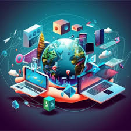

Esta tambien es conocida como la tercera revolución industrial un proceso atraves del cual se produce el cambia de las tecnologias analógica,mecánica y electrónica
| ANALÓGICA | MECÁNICA | ELECTRÓNICA |
|---|---|---|
Estudia los sistemas cuyas variables varían de una forma continua en el tiempo y pueden tomar valores infinitos.
|
Es la aplicación práctica de la mecánica física,por tanto, se ocupa del estudio de las fuerzas y movimientos de los sistemas mecánicos.
|
Sistemas electrónicos que utilizan una señal digital ,representacion más común del algebra booleana y es la base de todos los circuitos digitales
|
Este proceso tuvo lugar entre las décadas de los años 50s y 70s. En los años 40s las primeras computadoras se asomaban a nuestro mundo, se trataba de cajones enormes de metal llenos de bulbos y transistores, incapaces de realizar las funciones a las que estamos tan acostumbrados. Desde entonces la industria no dejó de evolucionar, ahora tenemos computadoras mucho más pequeñas, personales y portátiles, capaces de realizar maravillas.
Las generaciones nacidas del año 2000 en adelante se caracterizan por desarrollarse en un medio ambiente dominado por la tecnología digital, donde los jóvenes se sienten cómodos utilizando los teléfonos inteligentes, computadoras e internet para socializar y llevar a cabo todo tipo de tareas, tales como hacer video llamadas, redactar documentos, enviar correos electrónicos, tomar fotografías, grabar y reproducir tanto audio como video, consultar mapas y GPS, son actividades que se pueden realizar con un teléfono inteligente. No obstante, la revolución digital viene acompañada de consecuencias sociales, es un hecho que la tecnología digital ha cambiado la forma en que vivimos en sociedad. Para el desarrollo de actividades cotidianas son cada vez más necesarias las tecnologías de la información (TICs) y estás a su vez, inevitablemente afectan la manera en que las personas se relacionan entre sí, por lo cual podemos concluir que las consecuencias sociales de la revolución digital son el cambio radical de la forma en que trabajamos, estudiamos y en general la forma en que vivimos.
¿Deseas conocer más acerca de este tema? Da click a los enlaces siguientes
¿Qué es la revolución digital y cuál es su importancia?
Revolución digital: en qué consiste y cuál es su impacto
¿Cómo empezó la revolución digital en el mundo?